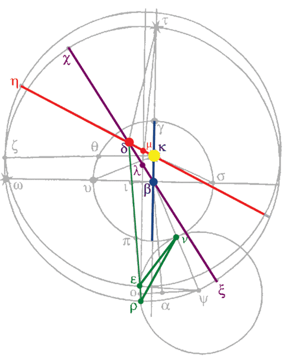

Chapter 6: Physical Heliocentrism:
Mean vs Apparent opposition -- second inequality
“A door is therefore open to us for deciding by means of the observations what I had deduced a priori by consideration of moving causes: that the planet's line of apsides, which is the only line bisecting the planet's path into two semicircles equal both in size and in vigor, -- this line, I say, passes right through the center of the solar body and not (as the theorists have it) through some other point.” (p.167)
Kepler's discovery of universal gravitation places the sun at the center of the world, not geometrically, but physically. Copernicus's use of the mean sun as the center ("putting his trust in Ptolemy") is geocentric: the mean sun is the center of the earth's orbit. This saves the appearances and geometrical compatibility with Ptolemy, but does not reflect thought as to cause. See page 160 for the physical absurdity of a point "empty, and propped up by nothing but imagination alone" being the cause of the speed of the planets. In this chapter, Kepler demonstrates that this question is not one of preference among a pantheon of equivalent geometric systems (as is the case with Ptolemy, Copernicus, and Brahe), but of substantial change: he proves the existence of crucial physical experiments to demonstrate conclusively that he is right.
Previously, in chapter 5, Kepler examined the effect on the first inequality, of the necessary change in hypothesis resulting from the shift from use of mean to apparent oppositions. Now, he takes up the effect this has on the hypothesis of the second (solar) inequality.
Here you have the Copernican system, where κ is the true body of the sun, β the center of the earth's orbit (the mean sun), δ Mars's equant, and λ the center of Mars's mean eccentric. At mean opposition, when the body of the earth lies on the line between β and the planet (as, for example, at υ with Mars at ω), then "the planet has been supposed to be divested of the second inequality." Using measurements of mean opposition, Copernicus created his hypothesized planetary path (purple).
It is clear that using apparent oppositions (with the true sun at κ instead of the mean sun at β) will give different results. See Chapter 5. The transformed hypothesis maintains the equant at δ but moves the line of apsides, changing the location of slowest movement from χ to η, and the center of Mars's eccentric from λ to μ. This new hypothesis, based on apparent oppositions, is red.
Now, in chapter 5 it was shown that from this change in hypothesis, "all the appearances at β are left almost completely undisturbed." But what about the second inequality? How will the earth's view of the planet change?
“It is required to find the point on the earth's orb from which the lines of vision passing through ε and through ρ are at their greatest distance from one another and form the greatest angle of vision, and at which the error would be greatest if the planet were placed at ρ when it should have been placed at ε.” (p.163)
Kepler puts Mars at ρ for the Copernican mean hypothesis, and at ε for Kepler's apparent hypothesis, while the earth is at ν. The maximum difference in observed position of the planet, angle ρνε, is found to be 1°3'32", a substantial difference!
Link: Why choose that location for ν?Using this difference
A new hypothesis resulting from the use of apparent oppositions engenders a significant, and observable change of appearances. This observable difference indicates the possibility of a crucial experiment to prove the necessity of using the apparent sun. Unlike the differences between the three planetary hypotheses of Ptolemy, Copernicus, and Brahe, this is a knowable question. This seemingly tiny change from mean to apparent sun, a difference of "only four semidiameters (diameters, according to the authorities) of the solar body" causes a larger physical effect, than the seemingly immense geometric shifts between Ptolemy, Copernicus and Brahe! Of them, Kepler writes:
|
“These three forms are absolutely, perfectly, geometrically equivalent.” (p.157) |
Not so for the use of mean (fake!) versus apparent (true) observations.
| On to Part II! |